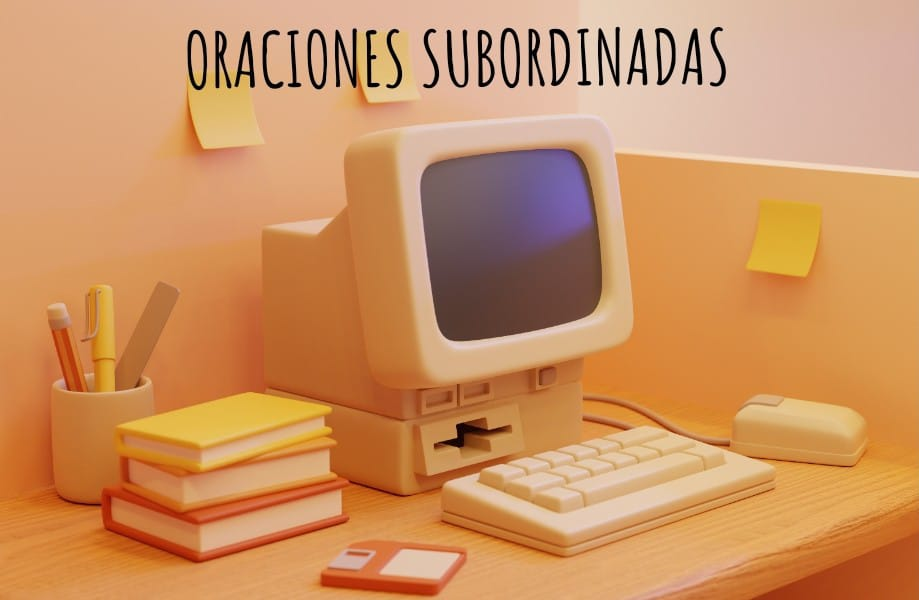

¿Qué son las oraciones subordinadas?
Son un tipo de oraciones compuestas, es decir, oraciones dotadas de más de un verbo y más de un predicado, en las cuales se produce un efecto de subordinación, esto es, que una oración se mantiene como principal y la otra depende de ella para expresar completamente su significado.